〜 そして伝説のライダーへ 〜
＊「鬼王を倒す冒険者を求めます。そなたの脚を、貸してくれませんか。」
* "I seek an adventurer to defeat the Ogre King. Will you lend me your legs?"
いつもの ERG 練習が、そのまま RPG の冒険になる。
Your usual ERG workout, turned into an RPG adventure.
Ride on Quest は、スマートトレーナーで走って遊ぶ、懐かしいドット絵の RPG です。
Ride on Quest is a retro pixel-art RPG you play by riding your smart trainer.
敵が現れたら、言われた回転数に合わせてペダルを回す。ドラムの色で今の回転が分かる（遅い＝青・合う＝緑・速い＝橙）。
合わせ続ければ必殺技、もっと合わせれば会心の一撃。3本とも会心なら、金の星の大技。
鬼王は途中で本気を出す。
When an enemy appears, pedal at the cadence you're given. The drum's color shows your cadence (too slow = blue, on target = green, too fast = orange).
Hold it for a special move, hold it steadier for a critical hit. Land three critical hits in a row for a golden-star finisher.
The Ogre King gets serious halfway through.
8人の主人公は、8つのトレーニングプラン。その日のメニューで主人公を選ぶ。
戦士（総合強化）・魔法使い（持続力）・武闘家（基礎づくり）・僧侶（長距離）・ワルキューレ（VO2max）・エルフ（スプリント）・侍（スイートスポット）・傭兵（登坂）。
戦闘は ERG で走るインターバル。ギアを変えなくてよい。15分から遊べる。
Eight heroes = eight training plans. Pick the hero that fits today's workout:
Warrior (All-Round Power), Witch (Endurance), Monk (Foundation), Priest (Long Haul), Valkyrie (VO2 Max), Elf (Sprint), Samurai (Sweet Spot), Sellsword (Climbing).
Battles are interval workouts in ERG mode. No shifting needed. Ride from 15 minutes.
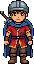
戦士Warrior総合強化All-Round Power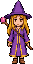
魔法使いWitch持続力Endurance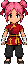
武闘家Monk基礎づくりFoundation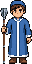
僧侶Priest長距離Long Haul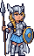
ワルキューレValkyrieVO2maxVO2 Max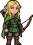
エルフElfスプリントSprint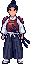
侍SamuraiスイートスポットSweet Spot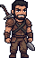
傭兵Sellsword登坂Climbing女王の試練（FTP テスト）で FTP を測る。ほかの主人公たちがペースメーカーとして並んで走る。
敵の強さは、あなたの FTP に合わせる。
Measure your FTP in the Queen's Trial, with the other heroes riding beside you as pacemakers.
Enemies are scaled to your FTP.
本物の火山の島（北海道の渡島大島がもと）を走る。坂は本物の勾配。
海岸・森・火口で、敵も村人もちがう。走るうちに、朝・昼・夕方・夜と空が変わる。
Ride a real volcanic island (based on Oshima-Ōshima, Hokkaido). The hills are real gradients.
Enemies and villagers differ on the coast, in the forest and at the crater. The sky turns from morning to noon, evening and night as you ride.
ゴースト（自分の記録・ほかのプレイヤーの記録）と走る、レースをする。記録は FIT で保存し、Strava にも上げられる。英語と日本語。
Ride and race with ghosts (your own rides and other players'). Rides are saved as FIT files, ready for Strava. English and Japanese.
FTMS（ERG）に対応した Bluetooth のスマートトレーナー。心拍ベルトとパワーメーターは、なくても遊べる。トレーナーが無くても、つながずに試すモードで遊べる。
Mac・Windows。重い GPU は要らない。ブラウザで軽快に動く。
iPhone・iPad は Bluefy（無料のブラウザ）で遊べる（iPhone でつながり、ERG の負荷がかかるのを確かめた。iPad は確かめ中）。スマホは縦でも横でも。Android の Chrome でも遊べる見込み（確かめ中）。
買い切り、サブスクリプションなし。
A Bluetooth smart trainer with FTMS (ERG). A heart rate strap and a power meter are optional. You can also try it without a trainer.
Mac and Windows. No high-end GPU needed; it runs smoothly in a browser.
On iPhone / iPad, play with Bluefy, a free browser (confirmed on iPhone: it connects and ERG works; iPad still being tested). Phones work in portrait or landscape. Chrome on Android should work too (still being tested).
One-time purchase, no subscription.
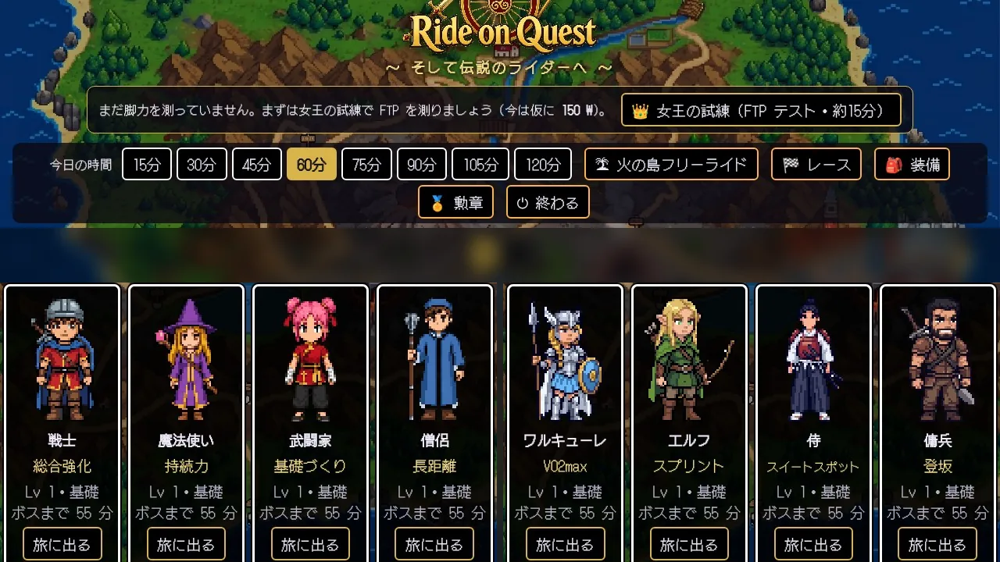
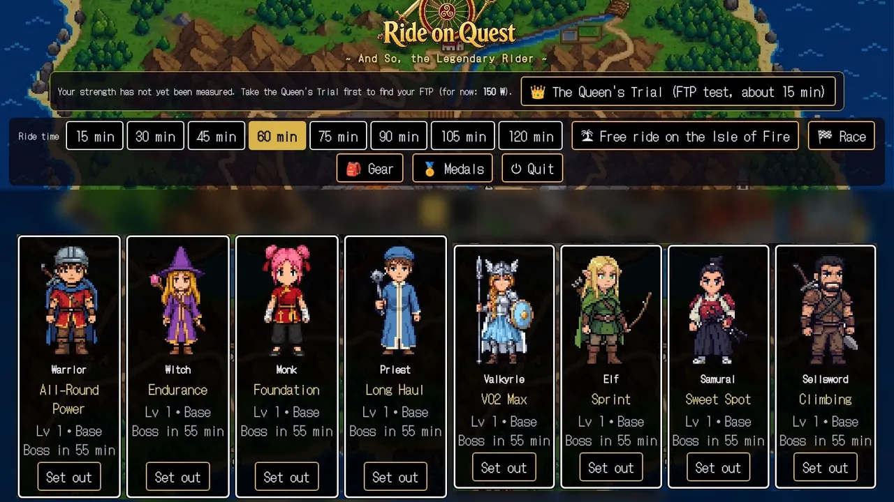
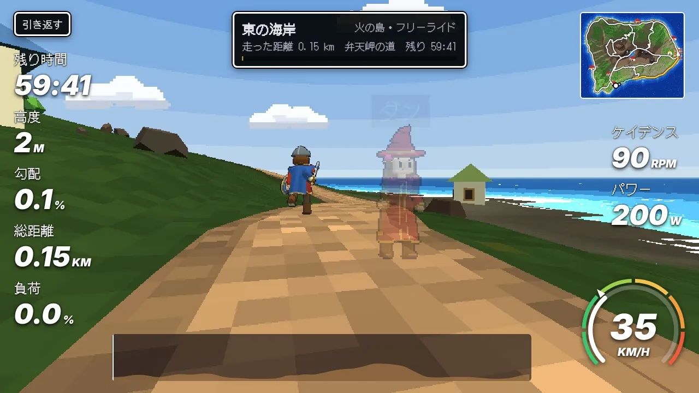
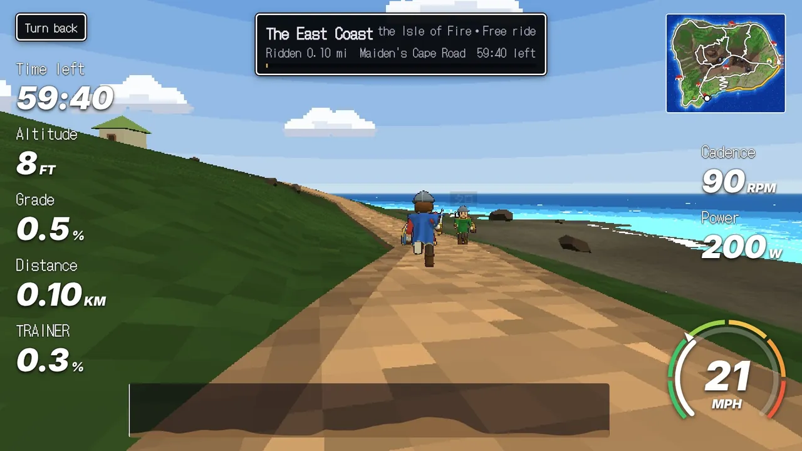
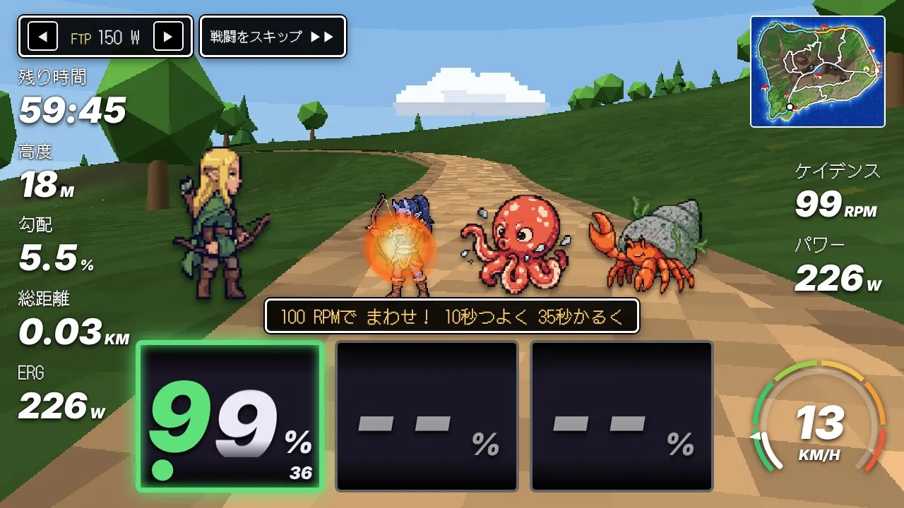
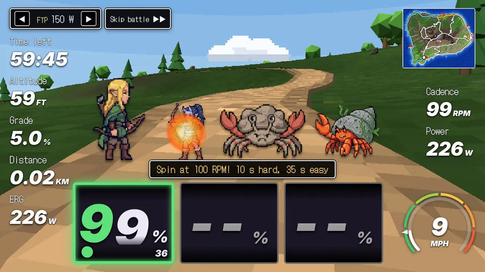
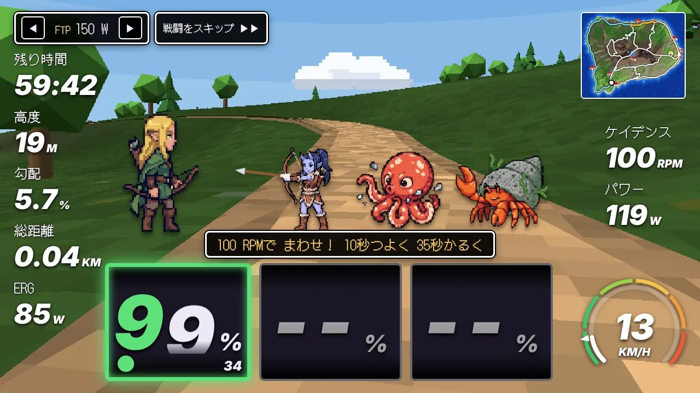
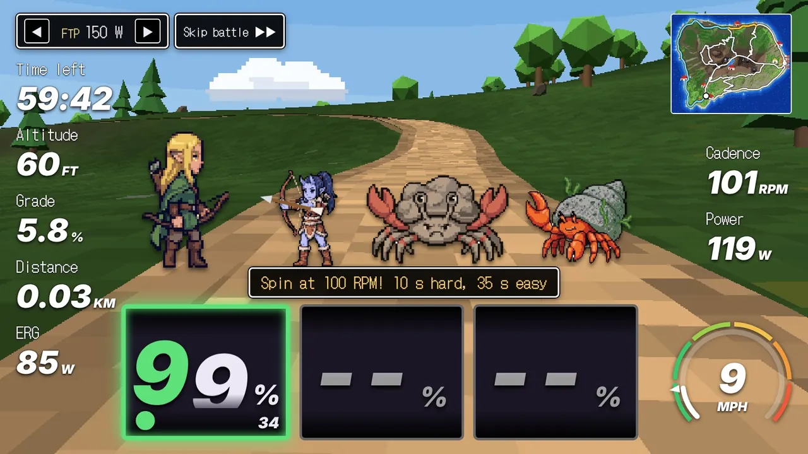
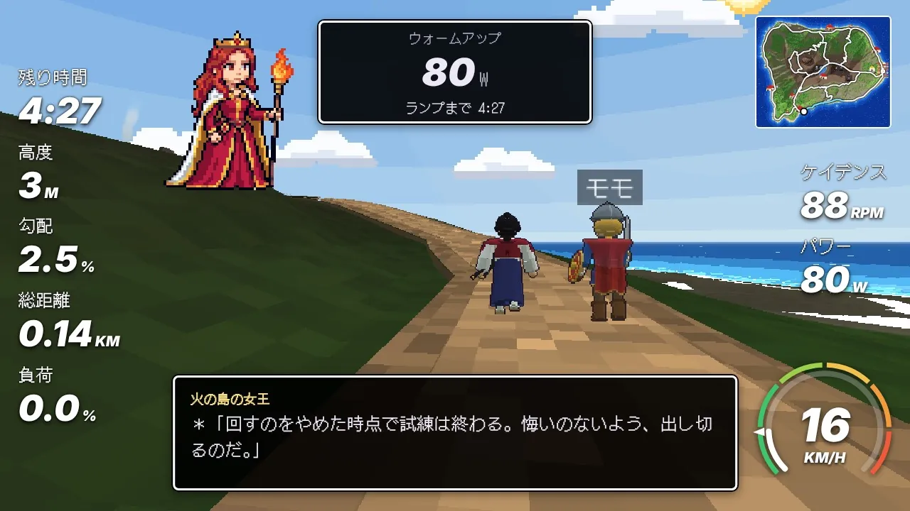
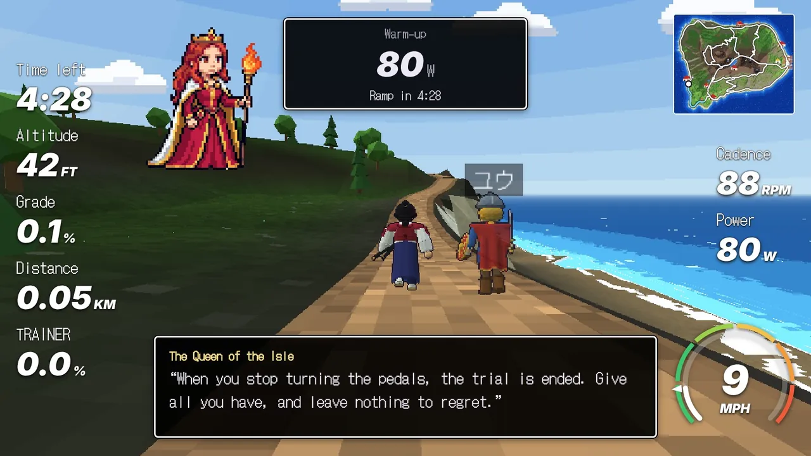
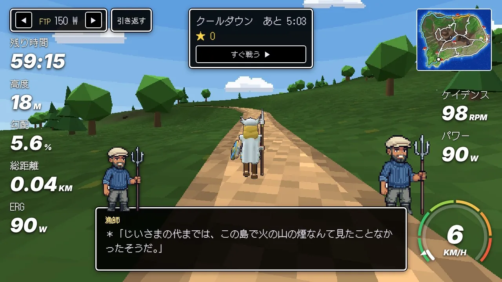
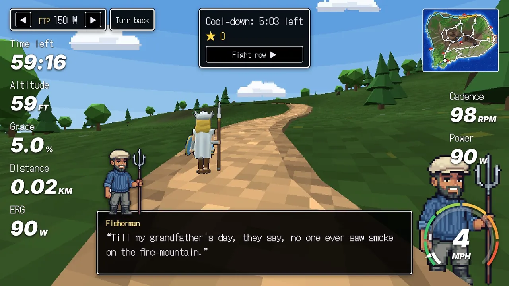
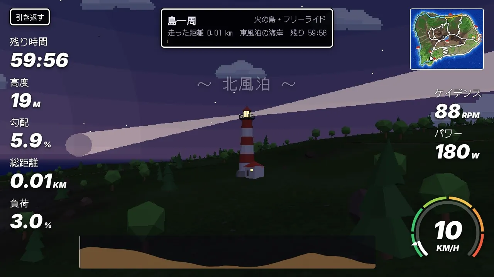
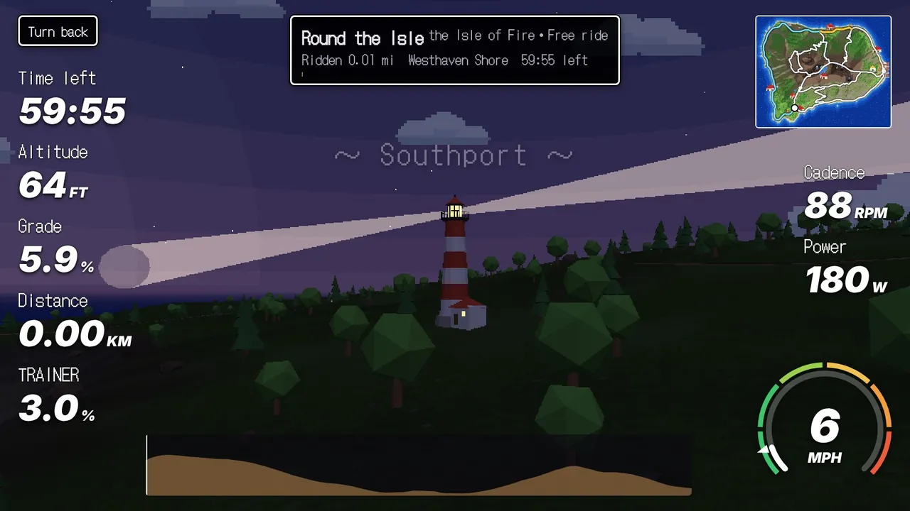
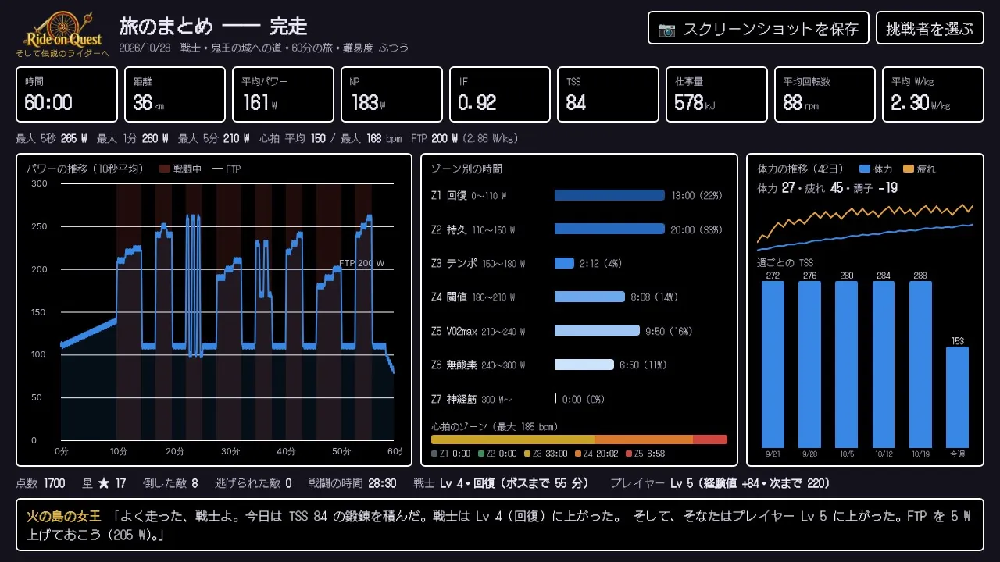
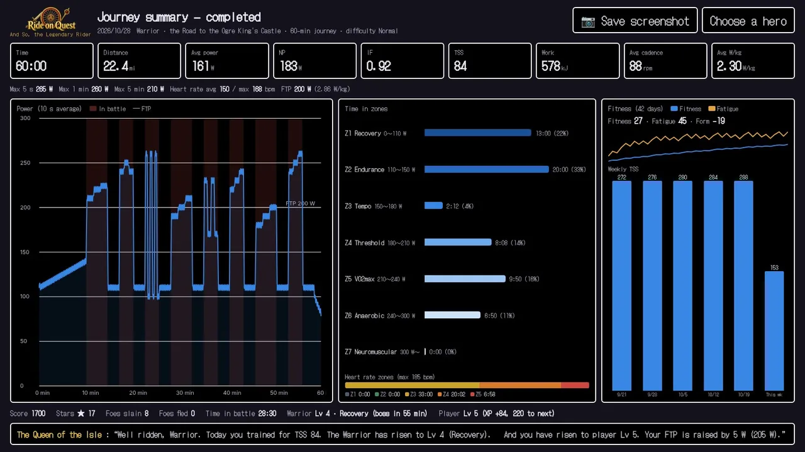
ベータテスターを募集中です。応募すると、試し用の URL をメールでお送りします。
Beta tester applications are open now. When you apply, we email you the link to the test version.
応募すると、遊ぶための URL がメールで届きます。